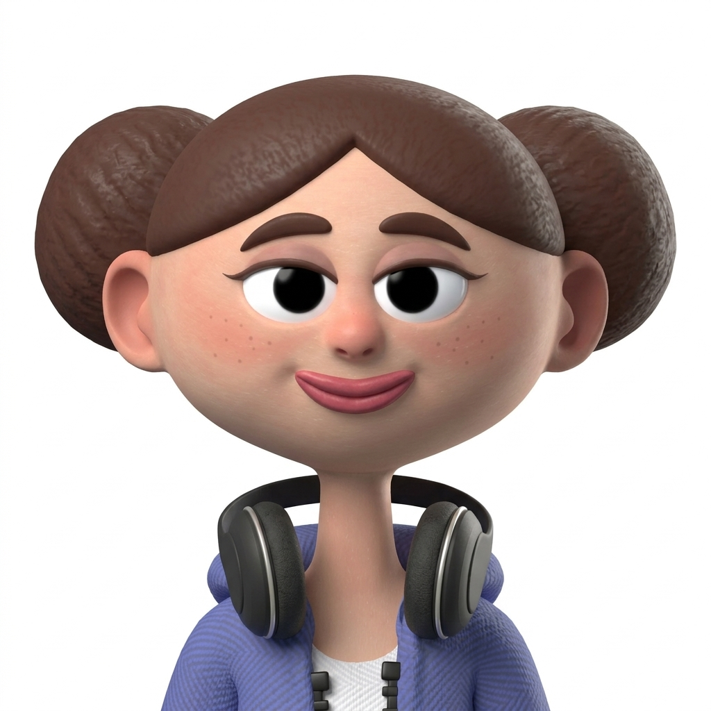

The currently shipped Hero Stage shows a single character at full bleed.
Discovery of the second character relies on either auto-advance firing
(7s timer) or the user noticing the "Meet Kai" chip. Risk: a kid who
moves through onboarding fast taps "Pick Luma" without realising Kai
exists.
Idea: the canvas itself shows that there's more — a slice of the next character peeks in from the right edge, with their gradient and a hint of their name. No chip needed; the peek is the affordance.
Lore panel stays exactly as-is (bottom sheet on compact, right column on landscape). Only the canvas changes.
Swipe left to bring the next character forward; the peek and hero swap with a slide animation.
Story bars at top stay (auto-advance still ticks). "Meet Kai" chip can be removed — peek + swipe + auto-advance is plenty of affordance.
Scene 1 — Luma focused, Kai peeking on the right
Initial state. Kai's gradient + partial name visible at right edge → "there's another character here."
iPhone · compact
‹
LUMA

KAI
"I'll always pick up the group chat."
Into
loud lunch tables
the right playlist for your mood
knowing your birthday before you remember it
Not her thing
silent group chats
people who say "we'll see"
iPad · landscape
‹
LUMA
KAI
tap or swipe
1 of 2
Luma
"I'll always pick up the group chat."
Into
loud lunch tables
naming her roommate's plant Stephen
the right playlist for your mood
knowing your birthday before you remember it
Not her thing
silent group chats
people who say "we'll see"
Read:
Kai's deep blue gradient takes ~14% of the canvas right edge — instantly readable as "another option here"
The "KAI" name in the peek strip is centered in the visible slice — partially cropped by design (more there to discover)
iPad version adds a small "tap or swipe" hint inside the peek so the affordance is unmissable on a larger screen
No "Meet Kai" chip — the peek replaces it
Scene 2 — Kai focused, Luma peeking on the left
After swiping left or tapping the right peek. Hero/peek swap with a slide animation; lore panel content updates in sync.
iPhone · compact
‹
LUMA
KAI
"I'll just sit with you."
Into
rainy windows
finishing a book before starting another
knowing exactly when to stop talking
Not his thing
forced cheerfulness
surprise parties
iPad · landscape
‹
LUMA
tap or swipe
KAI
2 of 2
Kai
"I'll just sit with you."
Into
rainy windows
finishing a book before starting another
the smell of bookstores
knowing exactly when to stop talking
Not his thing
forced cheerfulness
surprise parties
group projects with people who don't read
Read:
After swiping, Kai becomes the focused hero (full gradient + portrait area)
Luma peeks from the left now (mirrored) — user can swipe back or tap the peek to return
Story bars: bar 1 (Luma) is complete-state, bar 2 (Kai) is active-fill
Kai art is a placeholder gradient blob until the real portrait ships
Comparison · what changes vs. the shipped static variant
Built version (currently on the branch) vs. peek concept
Stays the same:
Lore panel structure — bottom sheet on compact, right column on landscape, same tagline + lists + CTA
Story bars at top, auto-advance timer, swipe gestures, OnboardingLandscapeSplit container
All analytics events, OnboardingState selection logic, CharacterArchetype content
Changes:
Canvas splits into hero (~86%) + peek (~14%) instead of a single full-bleed character
"Meet Kai" chip is removed — the peek replaces it (and incidentally fixes the chip-vs-CTA adjacency confusion on iPad landscape)
Peek shows next character's gradient + cropped name — discovery is now visual, not buried in a chip
Peek is tappable (alternative to swipe) — bigger target than the chip ever was